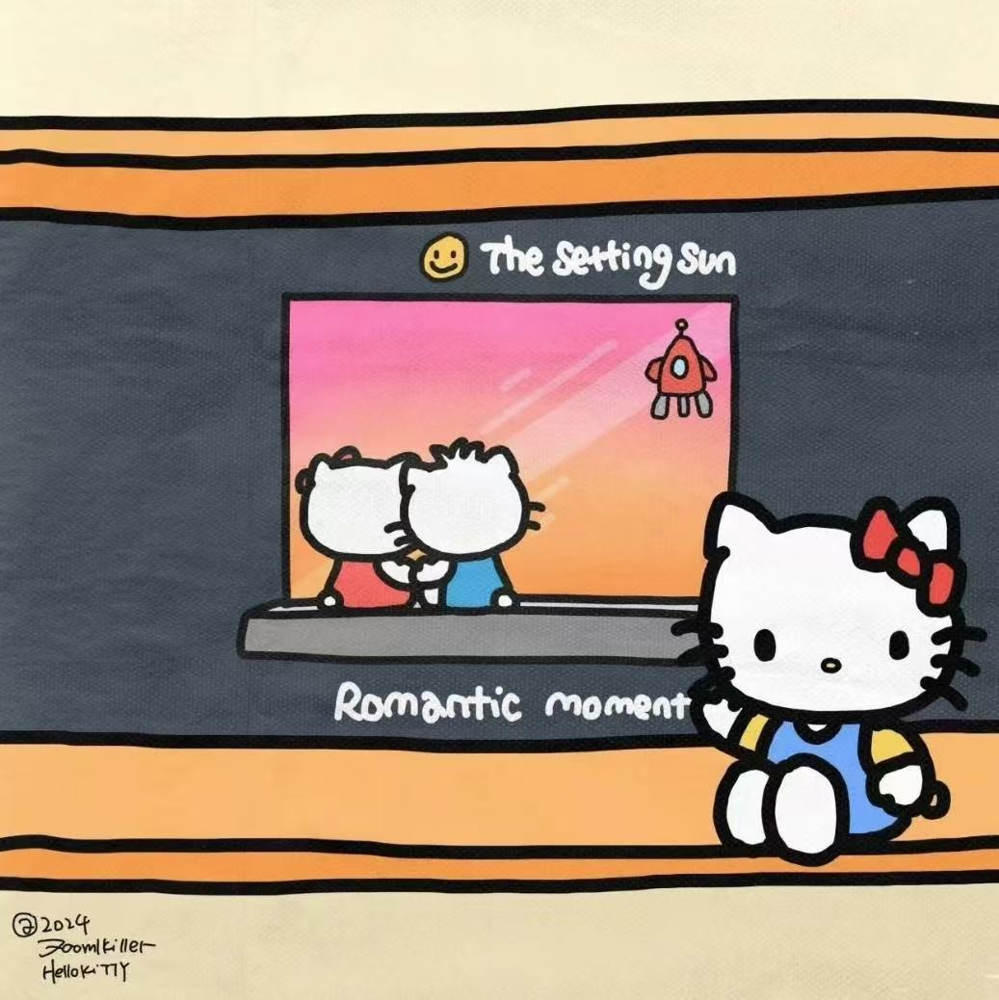
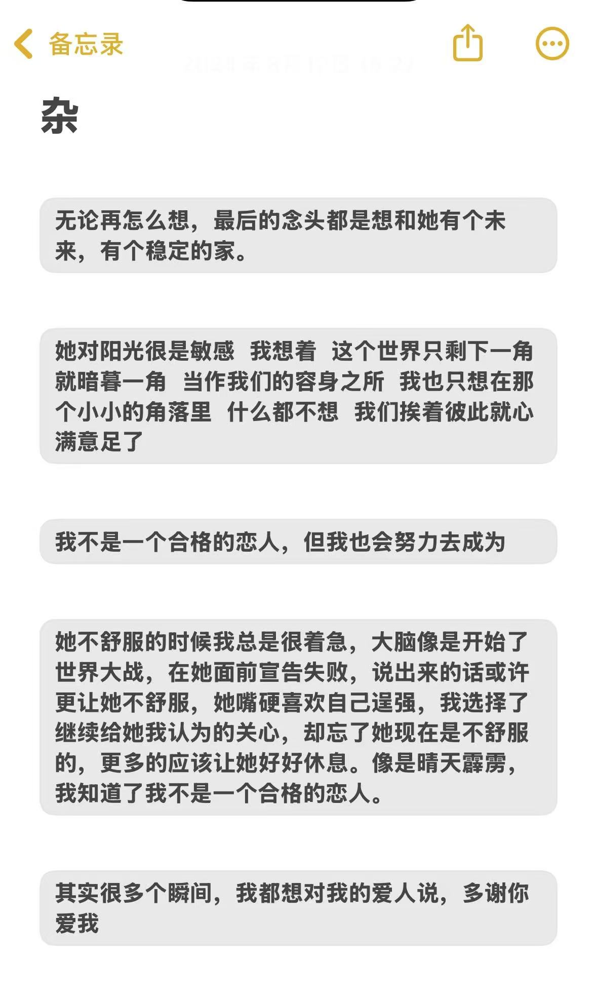

Born to the sun.
序.
Marry Christmas
纪念日
Hobby碎片
特别的人
总有
speechless
私奔
亲爱的：
ʷʰᵉʳᵉ ʷʰᵉʳᵉ ʷʰᵉʳᵉ is my love？ ʷʰᵉʳᵉ ʷʰᵉʳᵉ ʷʰᵉʳᵉ ʷʰᵉʳᵉ
ʷʰᵉʳᵉ ʷʰᵉʳᵉ

谢谢我们的第二次相遇，
谢谢那晚你的主动告白，从此我开启了真正有你的生活，以恋人的身份。
天有不测风云，我们的感情受到了一些挫折，飞来横祸，可是我们更加珍惜彼此，
你担心我因为磨难而离开你，我也同样忧虑你的担心，
我一遍一遍强调，重申我爱你的决心。
走到现在，是靠我们一万次的眼泪，两颗心紧紧拥抱和你。
我也原谅我前十七年一张彩票也没中过的运气了，感谢命运让我遇见你。
我经常干的事就是记录。
第一次给你看以前我偷偷记录你的帖子，
我都不知道该以怎样的方式来告诉你，我写下那些文字时的心情。
当你跟我说你也会写日记时，我从未想过有人竟然会和我做一样的事。
决定在一起的那天，我跟你说我要把我们发生的事都记录下来以免忘记。
于是我也以备忘录的形式开始记录着我们的爱情小记。
更夸张的是我们的那个小本本，
我曾以为这个厚本子需要用我们上半辈子的时间去写完，没想到如今就已经用掉了五分之一。
记录，是将回忆满倍速重播
